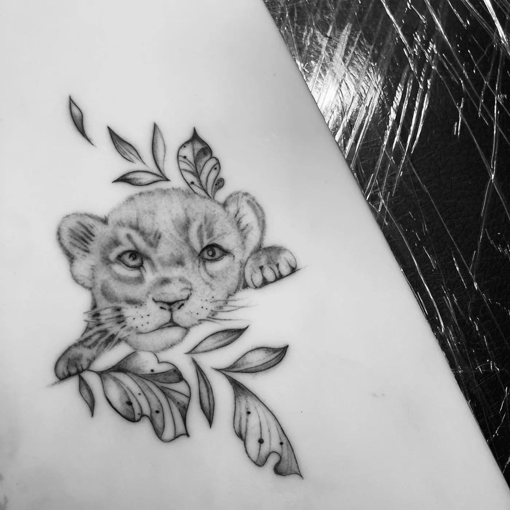
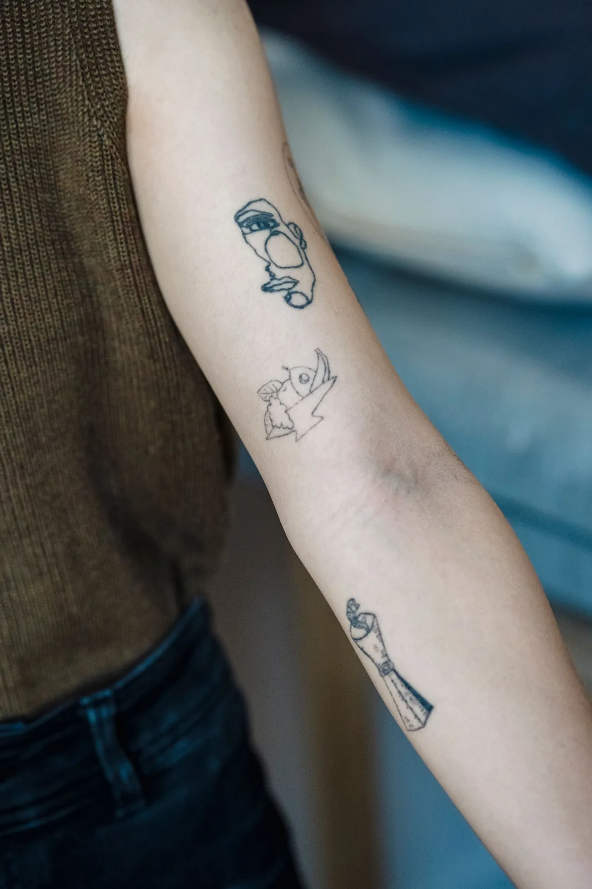
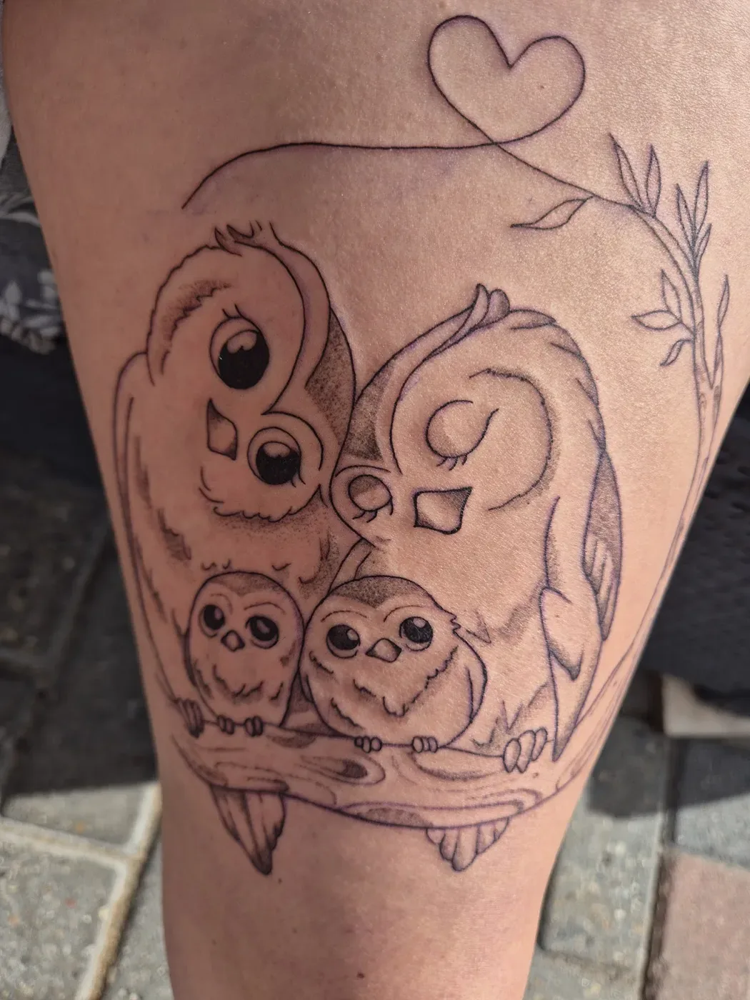
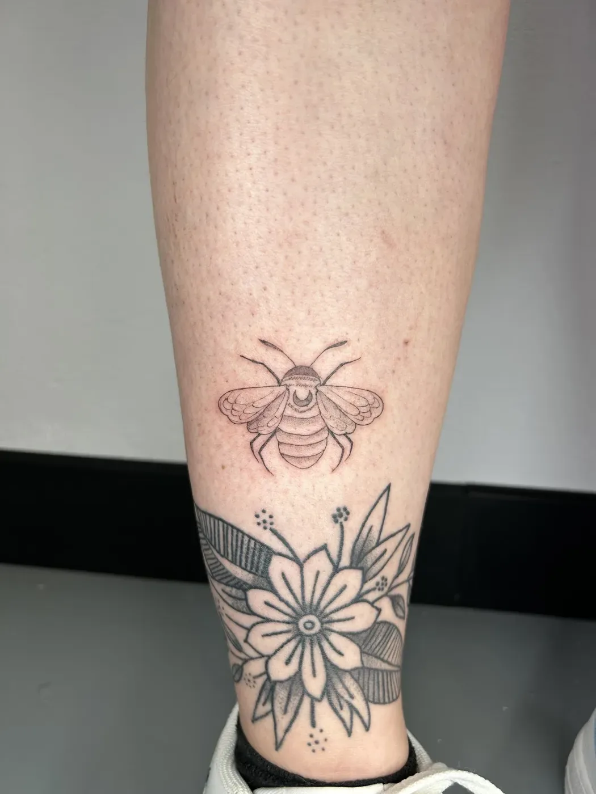
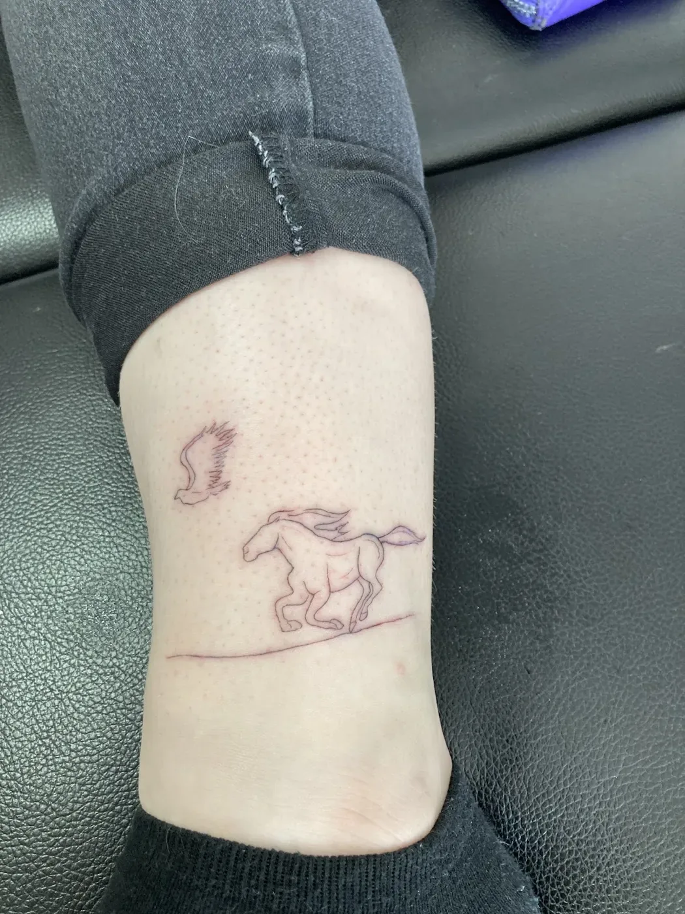
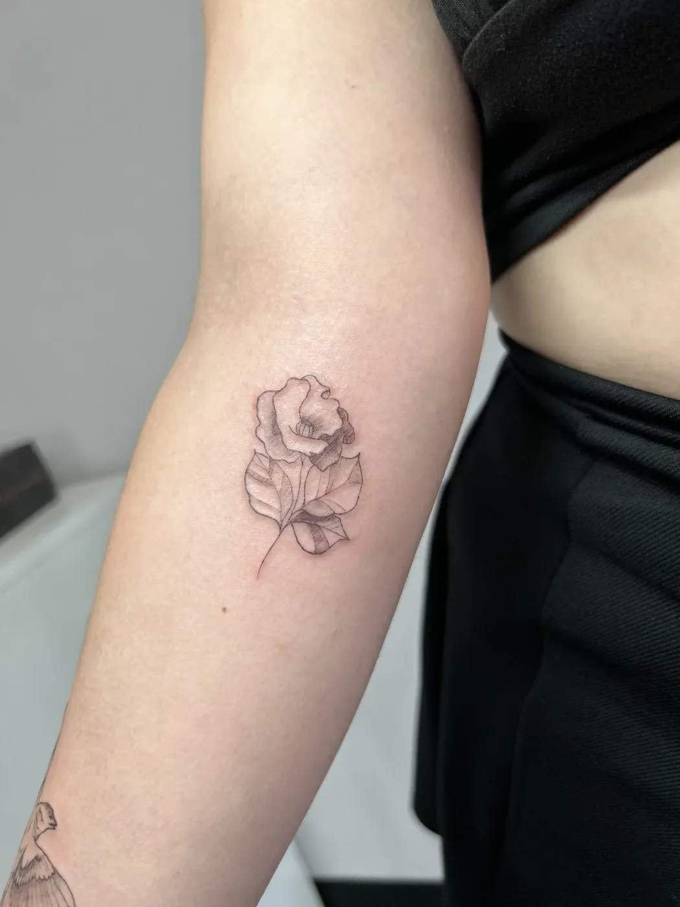
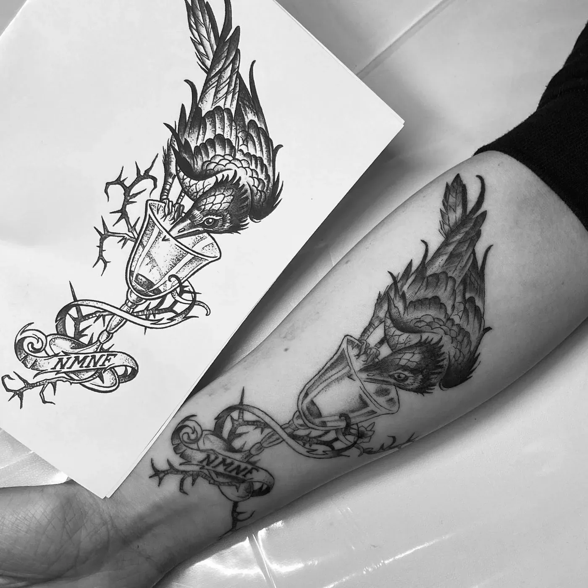

Dieren
Van een leeuwtje tussen de bladeren tot een uilenfamilie. Ook je eigen huisdier, naar een foto.
met zachte schaduwEen dier dat je mist, een bloem voor je mama of gewoon een lijntje dat je mooi vindt. Joyce tekent het samen met jou uit en neemt er de tijd voor, zeker als het je allereerste is.
Voor je eerste tattoo zit je hier helemaal goed.

Fijn werk is haar ding. Dunne lijnen, zachte schaduw en kleine details die je pas ziet als je er met je neus bovenop zit.
Je komt binnen met een idee, een foto of een herinnering. Je vertelt je verhaal, zij tekent mee, en pas als het voor jou helemaal klopt, gaat de machine aan.

Geen standaardplaatjes van een muur. Elk ontwerp wordt getekend voor jou en voor de plek waar het komt.
Van een leeuwtje tussen de bladeren tot een uilenfamilie. Ook je eigen huisdier, naar een foto.
met zachte schaduwEen roos, een veldbloem of een heel boeketje. Fijn getekend, zodat het mooi meebeweegt met je lijf.
ook als cadeauEen silhouet, een woord of een datum in één dunne lijn. Klein van formaat, groot van betekenis.
subtiel en strakEen beetje zenuwachtig? Normaal. Je krijgt rustig uitleg en je mag alles vragen, ook twee keer.
geen enkele vraag te veelEen greep uit wat Joyce de voorbije tijd tekende en zette. Allemaal op maat, allemaal anders.




Stuur een foto, een schets of een paar woorden. Ook als het nog maar half af is in je hoofd.
Vertel je ideeLetterlijk overgenomen van Google. Lees er gerust nog meer.
"Gezellige lieve jonge vrouw, die je met een hele vriendelijke glimlach onthaalt. Ik voelde mij meteen op mijn gemak."
"Vandaag bij Joyce geweest samen met mijn broer die een beperking heeft (…) Joyce ging heel rustig en super vriendelijk om met hem 🥰 de tattoos zijn ook super mooi gezet!"
"Ondertussen al 4 tattoo's laten zetten door Joyce. (…) Ik ben ook elke keer weer tevreden! Een leuke babbel met haar, goede uitleg& een hele fijne service!"
Een foto, een schets of een paar woorden via WhatsApp. Zet erbij waar het moet komen en hoe groot ongeveer.
Je ontwerp wordt gemaakt voor jou. Iets kleiner, een blaadje meer? Dat bekijken jullie samen.
Rustig, op jouw tempo. Je gaat naar huis met uitleg over de verzorging, en vragen achteraf mogen altijd.

eerst op papierStuur Joyce gerust een berichtje met je idee. Dan bekijkt ze wat mogelijk is en spreken jullie samen een moment af.
Ik maakte deze demo voor jullie om te tonen wat er kan. Na een kort gesprek maak ik er iets veel persoonlijkers van, helemaal naar jullie wens.
Vrijblijvend. Ik kom langs of we bellen.
Op maat, op jullie eigen domein.
Geen voorschot. Jullie betalen pas als alles klaar is.
Hosting, domeinnaam en kleine wijzigingen, zoals nieuwe openingsuren.
Omdat een voorbeeld meer zegt dan een mail. Zo zien jullie meteen wat er kan, en het kost jullie niets.
Nee. Het gesprek is vrijblijvend. Vinden jullie het niks, dan is het daarmee gedaan.
Na ons gesprek staat jullie site binnen 10 tot 14 dagen online.
Zeker. Jullie domeinnaam kan gewoon blijven, de nieuwe site komt in de plaats van de oude.
Nee, dat doe ik op basis van ons gesprek. Eigen foto's zijn mooi meegenomen, maar niet nodig om te starten.